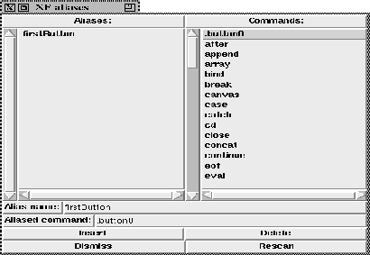

This procedure gives access to the alias feature of XF . It is possible to define procedure names that can be used instead of existing procedure names. This is very useful for complex widget names which can now be abbreviated to a short precise name.

Figure: The procedure XFProcMiscAliases
The left list contains the known aliases, and the right list the known procedures and commands. To insert a new alias, the new name is typed into the entry labeled (Alias name:). By clicking on a procedure or command name from the right list, this name is inserted into the entry below the alias name. The two buttons (Insert) and (Delete) control the insertion and deletion of the aliases.